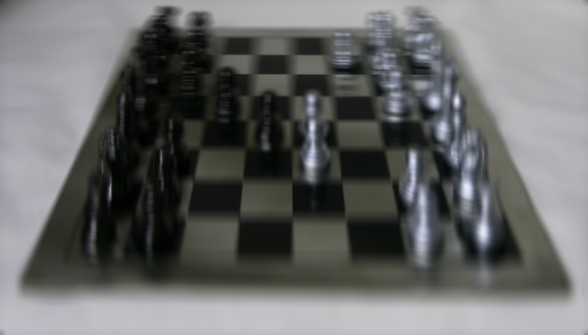
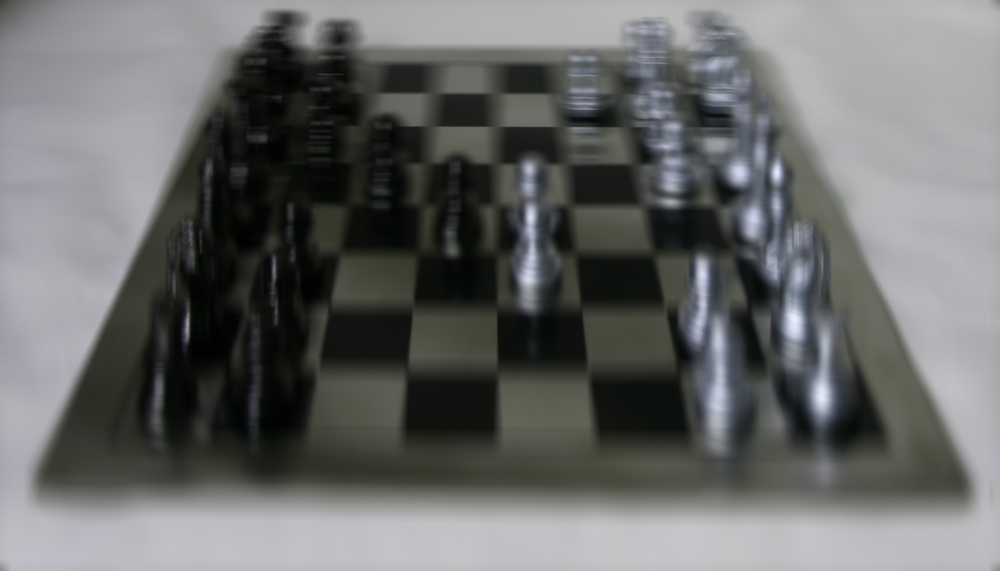

Khoa Hoang
Overview.
The project utilizes pre-captured data set of images from Stanford's Light Field Archive http://lightfield.stanford.edu/lfs.html, in which every object is photographed by an 2D array of camera to capture light rays from different angles to create a light field. From that light field, any object can be refocused at diferent depths after the images have been taken. Besides, the same thing can be done to the aperture which makes the object appear to be taken at different apertures. This project will accomplish both mentioned above.
Depth Refocusing
The general idea is when we take serveral pictures while moving the camera around and keeping the optical axis direction unchanged, the far away objects seem not to be affected but the closer ones will become blurry. By calculating the shifting distances between images and the very central one, scaling the distance up, shifting them appropriately and averaging them, multiple images focused at different depths can be generated.
The scaled shifting distance is calculated by:
x_shift, y_shift = scale * (target_x - ori_x, target_y - ori_y)
After recentering, the final image is the average of all centralized images:
result = average(sum of all centralized images)
Using samples of 289 17x17 images each from the data set, the results are shown below.
As the scale increases from 0 to 4, the focus moves from far-away points to closer ones until out of the bottom edge and the images become completely blurry.
 

Aperture Adjustment
Now to simulate images taken at different aperatures, the scale is fixed at 2 with different radi. As the aperature becomes bigger, more light rays come through it and the images becomes brighter but also more blurry everywhere except where the rays originally converge.
Averaging more images generate a larger aperature because more light rays are captured and otherwise.
By choosing the central image to be at [8,8] and shifting the other images within the chosen radius to the central image, then averaging out, the resulting images show as if they have been taken at different apertures

Reflection
It's really cool to see images taken from a giant array of almost 300 cameras (only Stanford can afford it lol) at different angles even though they were taken at the same time. Surfing through the images reminds me of the movie Matrix because of the rotating effect. This project amazes me how a bunch of images taken at different angles can generate backwards effects into the past as the images can be refocused and aperture adjusted even after the they were taken. Besides, it also reinforces my knowledge of the lightfield and helps me visualize depth control over the light rays.